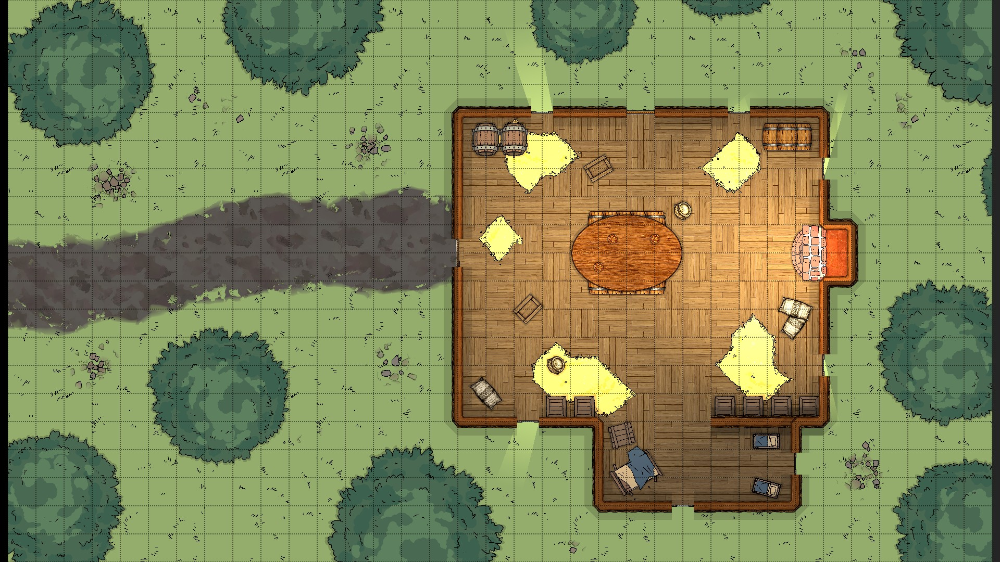
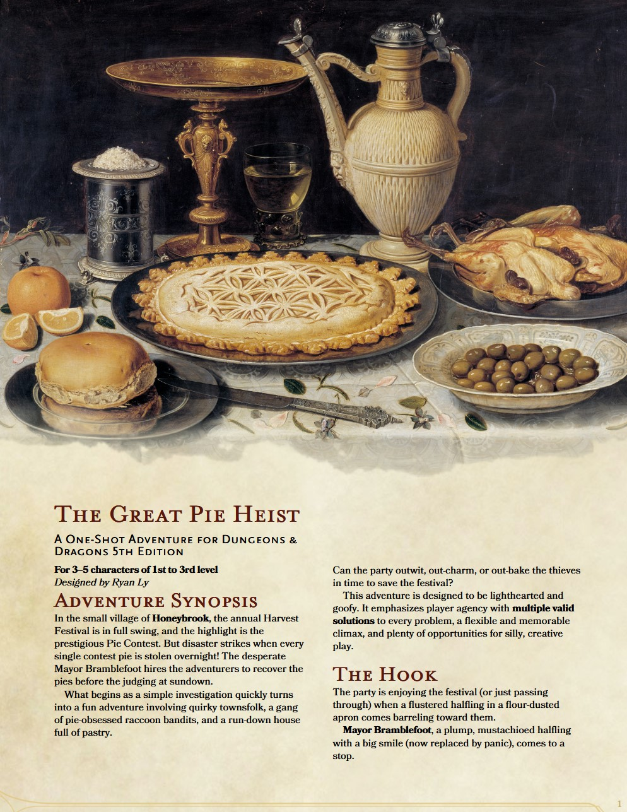
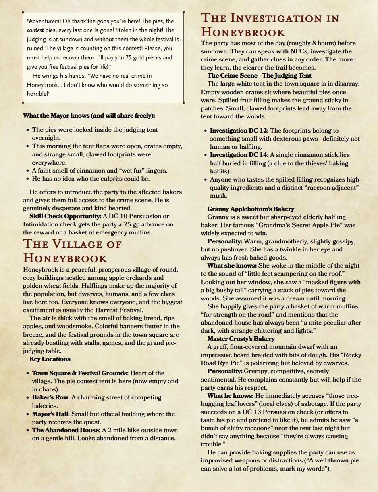

Quest Design Portfolio

The Whispering Vaults
Designed and wrote a complete 3-session heist adventure module featuring non-linear quest structure with multiple entry points, moral dilemmas, and branching outcomes based on player choices. Created detailed custom battle maps and regional maps, full NPC backstories with hidden agendas, lore handouts, and DM notes for improvisation. The module emphasizes player agency, creative problem-solving, and meaningful consequences that ripple through the story.
Portfolio elements included: Written module document, quest design flowchart, custom maps, sample branching dialogue trees, and encounter balancing notes.



Shattered Aegis — Campaign Compendium & Quest Bible
Built and ran a two-year interconnected campaign across a custom world, designing over twenty major quests and side content with deep cultural histories, political factions, and reactive world states. Developed extensive design documents including region compendiums, NPC relationship webs, long-term consequence tracking, and tools for adapting quests to player decisions in real time. The experience honed my ability to maintain a cohesive open-world vision while supporting emergent player-driven stories.
Portfolio elements included: Full campaign compendium (60+ pages), worldbuilding maps and diagrams, sample quest design documents with multiple paths, session prep notes demonstrating iterative feedback application, and examples of live quest adaptation.

